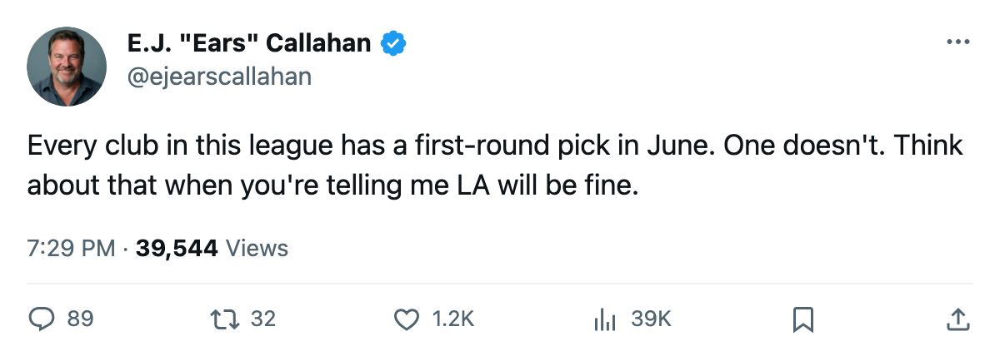
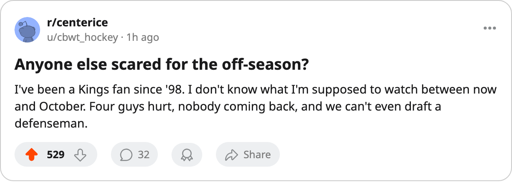

The Eliminated Market: LA Walks 3 of the Top 30. It Holds 0 Firsts.
Allison, Cechmanek and Deadmarsh all hit free agency in July. The Kings are the only club in the league with no first-round pick.
 E.J. "Ears" CallahanInsider · The Hot Stove
E.J. "Ears" CallahanInsider · The Hot Stove

LA wait-and-see through April, front office will not commit before June
LA walks 3 of the league's best 30 contract-year players this July, holds zero first-round picks in the 2005 rookie draft, and has 1 of the 3 on IR until June 4.
The  Los Angeles Kings summer is the most exposed in this league, and nobody has called it.
Los Angeles Kings summer is the most exposed in this league, and nobody has called it.
 Jason Allison87 is 29, scored 91 points in 77 games, and carries a $6.70M cap hit that won't match his market value in July. He sits at 98 morale, which means he'll listen to what's offered and walk toward the highest number.
Jason Allison87 is 29, scored 91 points in 77 games, and carries a $6.70M cap hit that won't match his market value in July. He sits at 98 morale, which means he'll listen to what's offered and walk toward the highest number.  Roman Cechmanek91 played 66 games at age 34 on a $3.30M deal.
Roman Cechmanek91 played 66 games at age 34 on a $3.30M deal.  Adam Deadmarsh87 played 31 games, logged 25 points, and then a knee went out between March 19 and March 21. His return date is 2005-06-04. Two days before what the calendar has as the rookie draft.
Adam Deadmarsh87 played 31 games, logged 25 points, and then a knee went out between March 19 and March 21. His return date is 2005-06-04. Two days before what the calendar has as the rookie draft.
Three players from the league's top 30 in overall among the contract-year class, all leaving the same summer. A man who would know says the front office knows it cannot hold all three. That man would not be wrong. Allison is the market's center. Cechmanek is a 34-year-old backup's salary. Deadmarsh is a knee on a short deal.
The pick problem is the real story
LA holds 4 picks across 5 rounds and 0 first-rounders. No other club in this league sits at zero.  St. Louis Blues holds LA's first-round selection, traded away at some point before this season. The Kings finished with 79 points and a L2 in their final two games, and their scouting report for next summer is: no capital, three players gone, a payroll of $52.43M that drops by $12.80M the day July hits.
St. Louis Blues holds LA's first-round selection, traded away at some point before this season. The Kings finished with 79 points and a L2 in their final two games, and their scouting report for next summer is: no capital, three players gone, a payroll of $52.43M that drops by $12.80M the day July hits.
That $12.80M could buy depth in free agency, or it could sit there while the club holds its first overall-eligible draft in recent memory with nothing to trade up. The 2005 rookie draft is 56 days away. What the calendar has as free agency closing is 106 days away.
What the locker room says
 Ian Laperriere75 has a knee and won't be back until May 18.
Ian Laperriere75 has a knee and won't be back until May 18.  Lubomir Visnovsky80 has a concussion, out until May 21. That's 4 men on IR for a club with nothing to show for 82 games. On morale, Los Angeles Kings sits at 94.8 as a club average, 23rd of 30, with Marc Lamothe71 at 76 in the league's bottom 15 and
Lubomir Visnovsky80 has a concussion, out until May 21. That's 4 men on IR for a club with nothing to show for 82 games. On morale, Los Angeles Kings sits at 94.8 as a club average, 23rd of 30, with Marc Lamothe71 at 76 in the league's bottom 15 and  Brad Larsen65 at 100 in the top 10. The room is split.
Brad Larsen65 at 100 in the top 10. The room is split.
League sources put the Kings in a wait-and-see posture through April. The front office wants to see who clears waivers in June, who gets hurt in camp, whether Allison's price breaks in a thin market. A rebuild doesn't announce itself. It happens in the space between the last game and the first offer sheet.
LA has until July 28 to decide what it wants to be. The rest of this league is already choosing.

